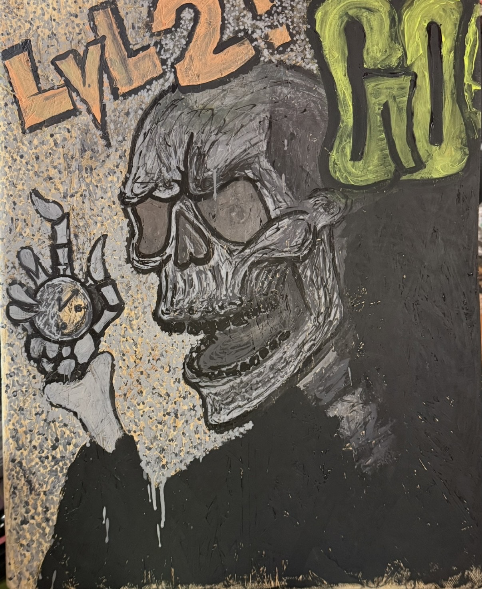
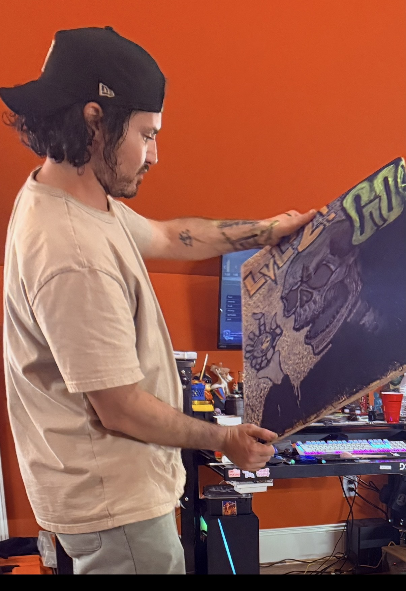
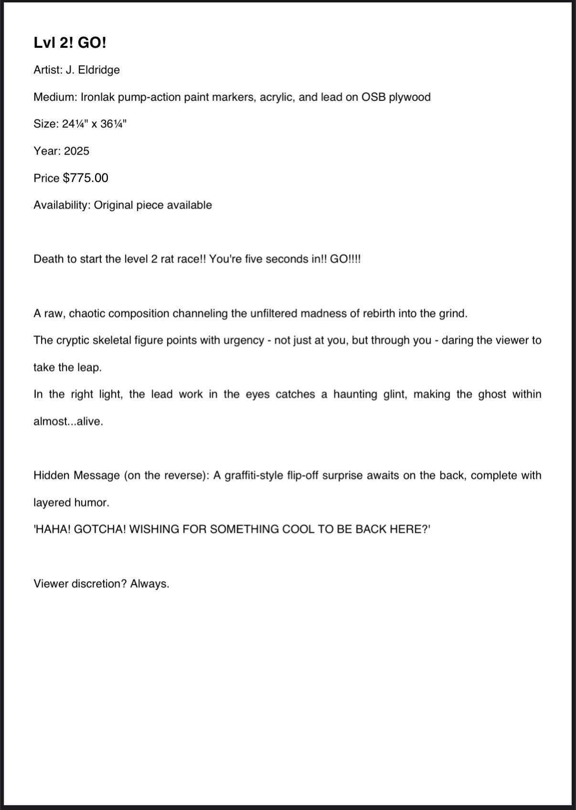
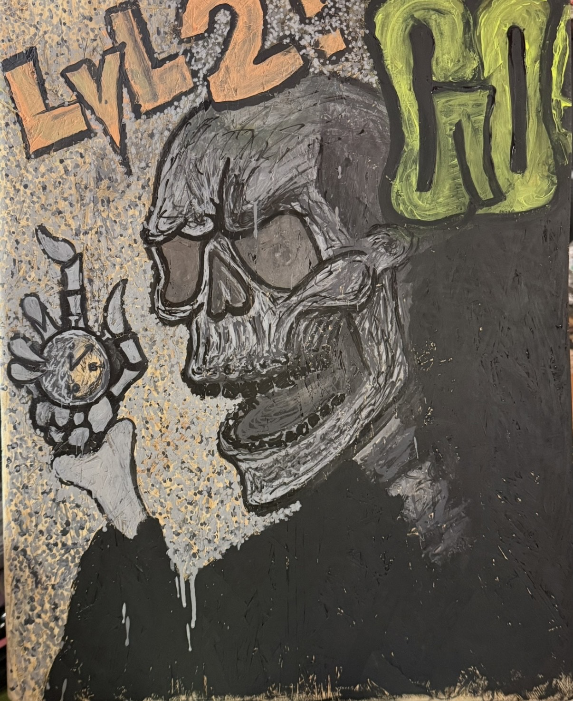
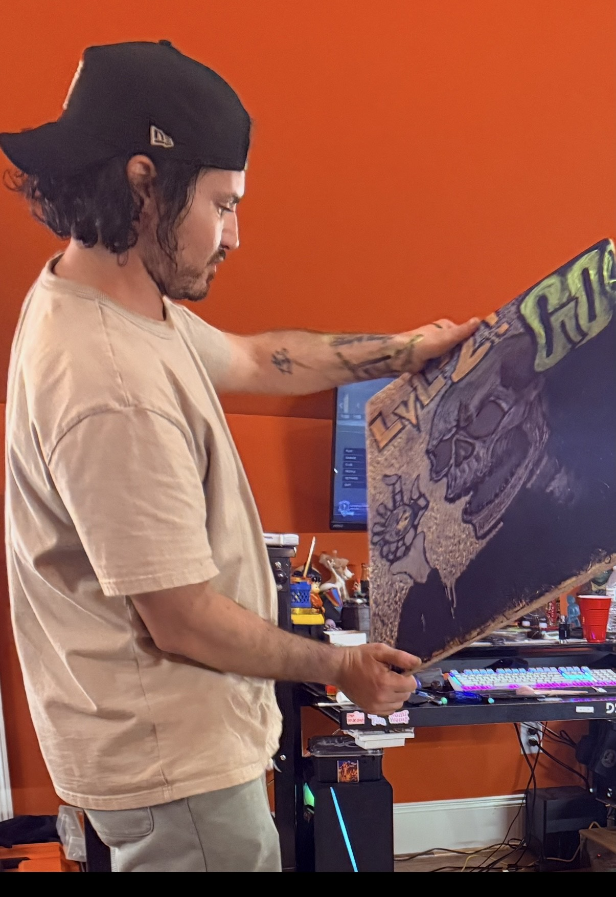
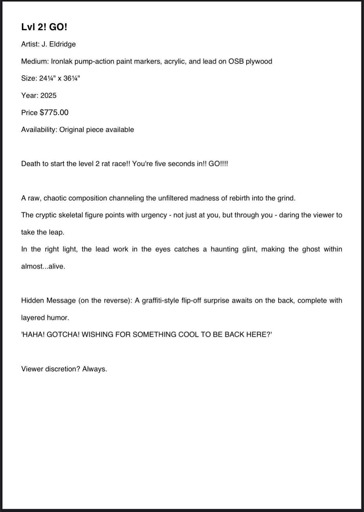

Lvl 2! GO!
Medium: Ironlak pump action paint markers, acrylic, lead
Surface: OSB plywood
Size: 24¼" x 36¼"
Year: 2025
Death to start the level 2 rat race! You’re five seconds in!! GO!!!
A hyped-up crypt keeper kicks off your next chapter with a wild stare and bony swagger.
Look closely — in the right light, his eyes reflect back at you with ghostly intensity.
This piece channels a chaotic rebirth through texture, paint, and pressure.
 





Price: $1,250.00
Availability: Original for sale